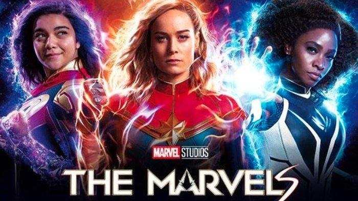

Judul Film: The Marvels

Sinopsis: The Marvels adalah film adiwira Amerika Serikat mendatang yang didasarkan dari Marvel Comics menampilkan watak
Carol Danvers/Captain Marvel, Kamala Khan/Ms. Marvel dan Monica Rambeau
- Genre: Laga/Petualangan
- Durasi: 105 Menit
- Director: Nia DaCosta
- Distributor: Walt Disney Studios; Motion Pictures
- Pemain:
- Brie Larson : Carols Danvers/Captain Marvel
- Iman Vellani : Kamala Khan/Ms Marvel
- Teyyonah Paris : Monica Rambeau
- Park Seo Joon : Prince Yan
- Tanggal Rilis: 8 November 2023
- Bahasa: Inggris
Deskripsi: The Marvels dijadwalkan ditayangkan di Amerika Serikat
pada 10 November 2022 sebagai bagian dari Phase 5 MCU.